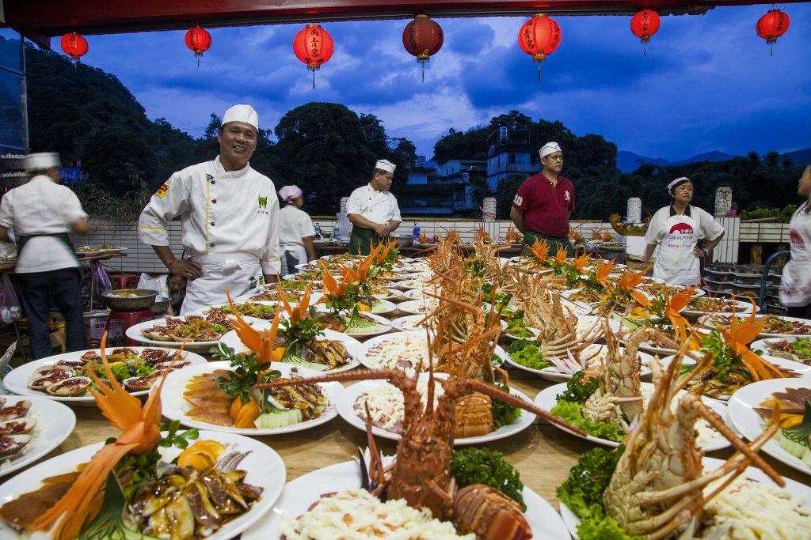

防彈少年團（韓語：방탄소년단／防彈少年團 Bangtan Sonyeon Dan；
日語：防弾少年団／ぼうだんしょうねんだん Bōdan Shōnen-Dan），
為韓國男子音樂團體，由Jin、SUGA、j-hope、RM、Jimin、V、Jung Kook七名成員組成，
隸屬Big Hit娛樂經紀公司旗下，為Big Hit娛樂第一個獨立製作培養的團體，
由創辦人兼音樂製作人房時爀和製作人Pdogg栽培。防彈少年團在出道前就已經有許多與其他藝人的合作作品，
其中包括藝人李昇基、簡美妍以及同門團體2AM，並且在趙權的SOLO專輯也有合作。
連到第2頁
連到第3頁
連到第4頁
連到第5頁